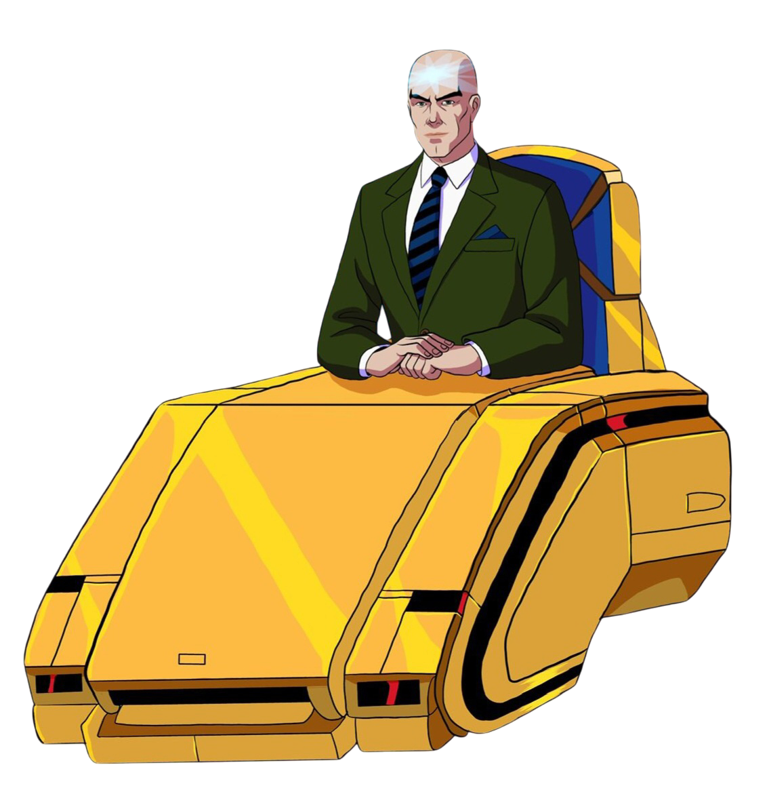

Integrantes
Professor X.
O texto sobre o novo integrante virá aqui e ficará posicionado do lado esquerdo da tela, perfeitamente alinhado.


Ciclope
Apesar da ideia de um grupo de super-heróis mutantes que salva pessoas ter vindo diretamente do professor Charles Xavier, a liderança da equipe, dentro do campo de batalha, sempre foi função de Scott Summers, o denominado "Ciclope". Scott cresceu com seus pais e irmão, Alex Summers, no Alasca e, durante uma viagem no avião da família, foi vítima de um terrível ataque do Império Shi'ar (povo alienígena), que fez com que a aeronave entrasse em colapso e caísse. Sua mãe desesperada,deu um paraquedas para seus filhos
Jean Grey
O texto sobre o novo integrante virá aqui e ficará posicionado do lado esquerdo da tela, perfeitamente alinhado.
![Ilustração em estilo de animação da heroína Jean Grey, dos X-Men, em corpo inteiro sobre fundo preto. A personagem possui longos cabelos ruivos, pele clara e físico atlético, vestindo seu uniforme clássico dos anos 90 nas cores amarelo-alaranjado e azul-escuro. O traje inclui uma tiara azul na testa que deixa o topo da cabeça exposto, ombreiras azuis, luvas que cobrem os antebraços e botas integradas à calça.
Ela usa um cinto azul com uma fivela circular vermelha trazendo o símbolo 'X' em preto, posicionada na cintura, e está em uma postura ereta e imponente de frente.](jean.jpg)